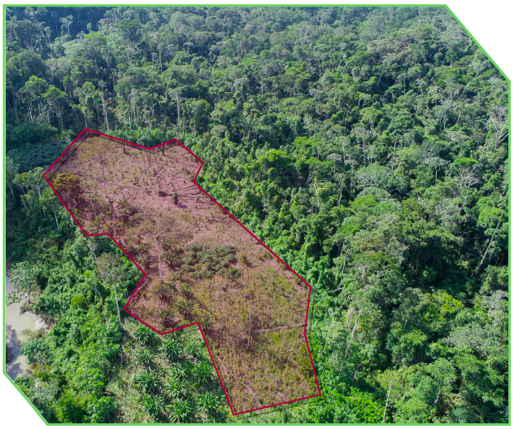

Innovación digital
que nos conecta
por los bosques
Una nueva forma de hacer Estado en el territorio, donde datos, tecnología, conocimiento local y talento del equipo del OSINFOR se unen para mejorar la fiscalización forestal, empoderar a productores, empresas forestales y fortalecer la transparencia. El laboratorio se presenta como el motor de soluciones digitales centradas en las personas y los ecosistemas ¡Los bosques!
Somos parte de la Red Nacional de Laboratorios de Innovación Digital, impulsada por la Secretaría de Gobierno y Transformación Digital (SGTD) de la Presidencia del Consejo de Ministros en Perú.
Promover la mejora en procesos y servicios institucionales.
Impulsar el diseño y prototipado de soluciones tecnológicas ágiles.
Fomentar la colaboración con la ciudadanía, academia y sociedad civil.
Desarrollar y validar iniciativas digitales piloto en áreas prioritarias.
Fortalecer las competencias digitales del personal de la entidad.

Modelos predictivos que identifican patrones de riesgo para optimizar la fiscalización.